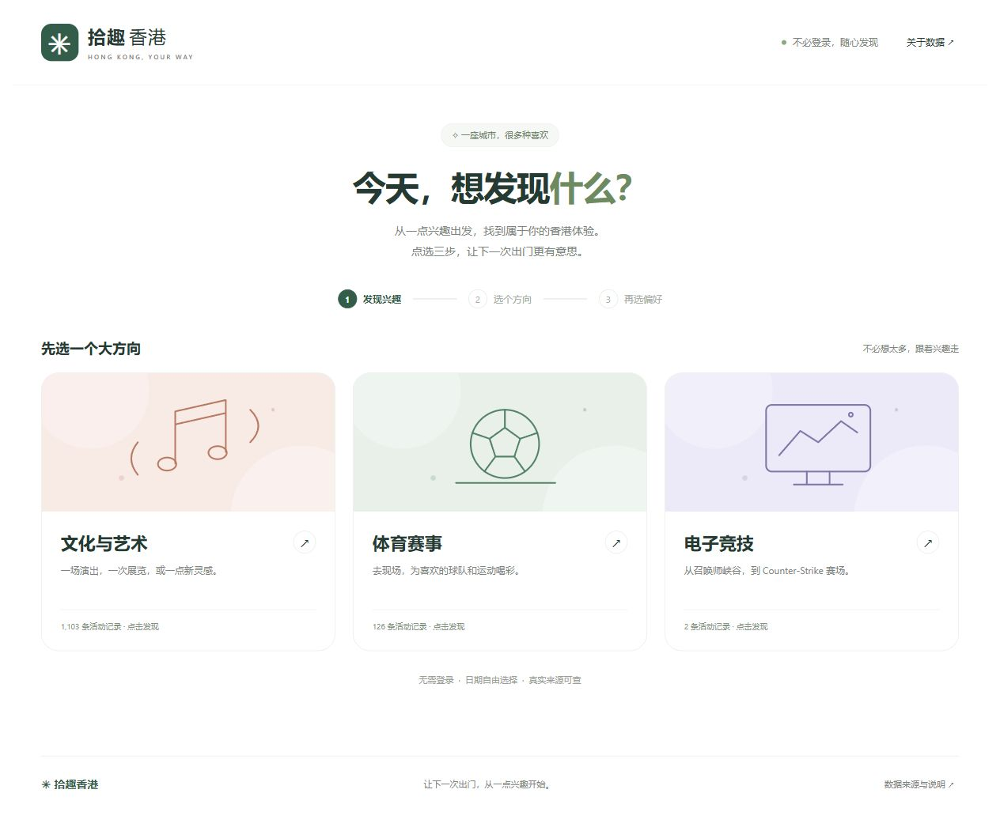

一次点击背后，发生了什么
从这个目录里的 1,231 条活动，到 34 条兴趣路径上的一列卡片。这一页把中间的五步摊开：数据怎么统一、文字怎么变成向量、主题怎么聚出来、结果怎么排序、最后怎么检验。
全部结果由项目里的 Python 代码离线计算，网页只负责展示。
- 01统一目录四个来源合成一张表
- 02文本向量TF-IDF，12,000 维
- 03主题聚类球面 K-means，8 个主题
- 04排序余弦 + MMR 去重
- 05评估目录内检索代理
四个来源，先变成一张能算的表
两个来源是 data.gov.hk 的开放数据，一个是香港足总官网的赛程，一个是 BLAST 的主办方页面。它们的字段名、日期格式和类别体系都不一样，所以第一步不是建模，而是统一：同一套编号、同一种日期、同一个标题键。
中文描述缺失 84%、票价缺失 54%——这两个数字决定了模型基本只能看标题，也解释了后面为什么用字符片段而不是分词。
把一条标题，变成 12,000 维的稀疏向量
中文没有空格，所以把每段汉字切成两字、三字的片段；英文按词切。每个片段按「词频 × 逆文档频率」加权，再把整条记录缩放到单位长度——这样两条记录越相近，向量的夹角越小。
tf(t,d) = 1 + ln c(t,d)取对数：出现十次不等于重要十倍。idf(t) = ln((1+N)/(1+df(t))) + 1加一平滑：每篇都出现的词权重是 1，不会被归零。cos(x,y) = x · yL2 归一化之后，点积就是夹角余弦。没有词典，也能切；代价是「音樂」会出现在「音樂劇」里，属于已知的假匹配。
1,231 条记录 × 12,000 个词，理论上有 1,477 万个格子；实际只有 5.4 万 个非零，占 0.37%。
稀疏意味着一次检索就是一次稀疏矩阵乘法，整份目录的向量只占几 MB，浏览器和笔记本都能轻松跑。
下面是小比例示意，亮色格子代表有值的词。
这一块用 scikit-learn 做过交叉验证：在同样的小语料上，手写实现与它的 IDF 最大差在 10⁻⁸ 量级，说明复现的是同一套公式，而不是「碰巧能跑」。
球面 K-means：把目录拆成八个主题
向量都被拉到了单位球面上，所以普通 K-means 的「欧氏平均」会把中心拖出球面。这里用球面版本：目标函数是每个点到最近中心的余弦平均值最大；固定簇之后，最优中心就是「成员向量求和再归一化」——这是柯西不等式直接给出的结论。初始化用余弦版 k-means++，并且跑三次不同种子取最好的一次。
二维投影（PCA）· 每个点是一条活动 · 仅用于观察结构，不参与推荐
点任一主题可以高亮对应的点。有些簇描述的其实是「命名模板」而不是语义主题——比如 51 条几乎同名的舞蹈训练班——所以这八个簇目前只作为分析层，没有进界面；界面里的 34 条路径是另外手工设计并校验全覆盖的。
余弦打分，再用 MMR 去掉重复
用户的兴趣变成一个向量：输入文字的向量，加上点过的活动的平均向量，再归一化。分数就是余弦。如果只按分数排，前五条往往是五个几乎一样的节目，所以还要按「和已选内容有多像」惩罚一次。
MMR = arg max [(1 − λ) · 相关度 − λ · max cos(候选, 已选)]
λ = 0 只看相关；λ = 1 只看新颖；产品取 0.2。
同一个查询、同一个候选集，只改变 λ：列表内部两两余弦从 0.498 降到 0.218。λ 从 0 扫到 0.5 之后，0.2 是「精度不掉、冗余明显下降」的折中点，这是判断，不是最优解。
没有用户数据，就用目录内的检索代理
目录里没有评分、没有点击、没有购票记录，所以做不了监督学习。退一步的做法是：从记录数不少于 10 的类别里抽 100 个标题当查询，候选集排除同一个标题组，看返回的五条里有多少条与查询同类。
TF-IDF 在同类 P@5 上并没有赢过关键词基线（0.610 对 0.634）：这个代理指标奖励「同类别」，而关键词基线在标题字面重复时几乎必中。模型赢在覆盖率（0.216 → 0.262）和列表多样性（0.383 → 0.333）——对一个帮人「发现」的产品，这两项更贴近任务；如果任务是精确找那一个东西，关键词反而是对的。
P@5 的分母固定是 5：只返回一条时也只算 0.2 分，避免「少返回就高分」。但这终究是代理指标，不代表用户满意度，也不能当作未来泛化的准确率。
这些数字，最后变成了这样一个页面
模型离线算好 34 条兴趣路径的排序，导出成一个约 1 MB 的 data.json；网页只负责点击、筛选和展示。所以推荐结果可审计、线上零计算，也不会出现「前后端算出两套答案」。
下面这张截图来自 2026 年 10 月的线上版本。
